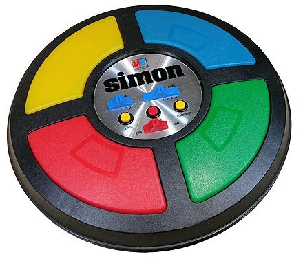

Introduction
The Handheld systems were only dedicated consoles until the arrive, with the second generation, of
the Microvision that provided the possibility to insert different games. Also, since the advent of
the forth generation Game Boy all the others handled systems were eclipsed.
Consoles
Between 1977 and 1982 the first handheld systems came out passing from the first Mattel Auto Race until the very first handheld system from Microvision.
Mattel Auto Race
Mattel Electronics Auto Race was the first handheld game ever to be totally digital.
It was released in 1976 pioneering this category of games. The games was based on avoiding other cars
arriving from the top while the player has to reach the top 4 times (4 laps) before the time ends (99 seconds,
which is the limit in only two digits). It was also possible to change the velocity in a range of 4 but doing
this the other cars will be as fast as we set, too.
Mattel also produced a very similar version of this product, the Battlestar Galcatica.
Here the player rests at the bottom while trying to shoot the space navyes and if manages he gains points.
Mattel Football
Football was launched in 1977 and foresaw to make possible a football game on a 9-yards camp. The market trend was thought to be bad according to a preview that was then discovered to be bad due to the high demand. It sold more than 500 000 units!

Simon
Simon was a memory skill game where the player was supposed to repeat the sequence said by the console pressing the buttons which lighted on while sounding that tone.
Electronic Quarterback
Electronic Quarterback was out in 1978 and differs from the others handheld systems giving the possibility for the quarterback, adding two blockers, to pass the ball. But the game is still really similar to Football, but focused on the quarterback passing and runnning.